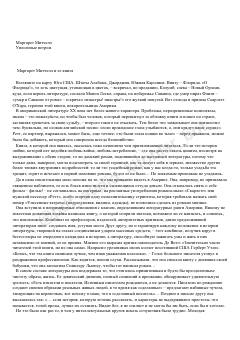

УВAmerika fuqarolar urushi davridagi Skarlett O'Xaraning hayoti va muhabbati haqidagi buyuk klassik roman.
Ushbu asar Amerika fuqarolar urushi davrida janubiy shtatlarda yashagan Skarlett O'Xara taqdiri va uning murakkab muhabbat hikoyasi haqida hikoya qiladi. Roman urushning vayronkor ta'siri, jamiyatdagi o'zgarishlar va inson irodasining sinovlari fonida yozilgan klassik asardir.